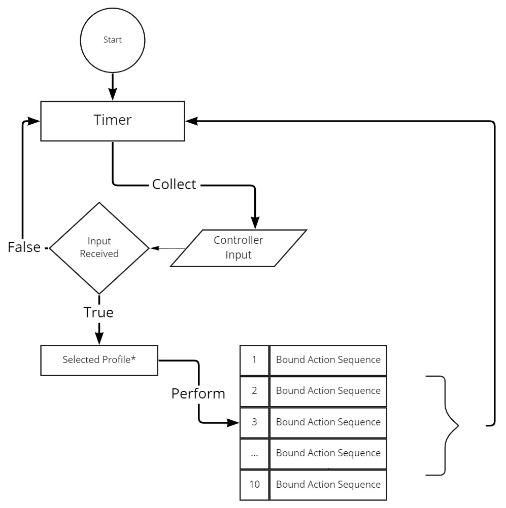

Control Box Application
This application is built using C++/WinRT and WinUI3 to build the UI along with DirectInput in order to interface with the controller.
This is available for download for Windows at roxorgolf.com/software
After download click the .msix file to install package.
Note: It is designed to specifically work for the roxor golf controller so input may not map to your handheld controller.
Design Requirements
Purpose:
Create an application which reads button presses from a custom controller and outputs definable keyboard and mouse entries through the Windows OS to the target golf simulator application
such as TGC 2019, GS Pro, and any other indoor golf simulator. The control box is designed to make a selection with the head of the current club you are using to make your shot.
Requirements:
- Target platform Windows 10 with no plans to expand to other platforms.
- User able to select the function that each button on the control box performs.
- Available functions include a predefined list organized by game which are shipped with the software for ease of use.
- If a predefined function is not available, user has the ability to create their own functions for keyboard entries and mouse clicks.
- User can have any number of profiles that hold the 10 defined functions for that profile.
- Handle different controller inputs receieved from either the wired or wireless controller but map to the same button.
- Modifiable background and buttons to reflect the particular control box that the end user has in their posession.
Implementation
Technology Considerations:
Being a desktop application with a target platform of Windows, I settled early on that I would write the application in C++ as this would allow me to easily
interract with the controller through Microsoft's depricated DirectInput library. This left me with a number of options to develop the user interface. After
a large amount of research, Microsoft was releasing WinUI3 under project Reunion into production ready status and I felt that this would be a good opportunity to learn a brand new
UI framework all while getting to use C++, which is a language that I love.
Learned Skills
This exposed me to whole new way of building an application with the .net architecture. I learned how to use XAML to place controls inside of a number of different layout structures.
One thing that was very useful was the WinUI3 Controls Gallery application available for free on the Windows store that allowed me to see the default controls in action on a page and linked
directly to the documentation. This allowed me to rapidly select which control was appropriate for the task and implement it quickly in my own application.
One thing that I (naively) did not expect was the lack of information that I would find on how to build an application using WinUI3. Of course it makes sense now because the framework was so new and not many real projects had been built using the framework and so the community was less knowledgable on its inner workings. This led to hours pouring over Microsoft's documentation in an attempt to understand what I had at my disposal for each design problem that I was facing. Personally, it did not bother me that I had to work in this way as it gave me a deeper understanding of what I was implementing in my application instead of being able to find the answer immediately.
High Level Overview
From a very high level, the application is built to check the controller for current input at a set interval using a timer. Then I parse the input to see if there are any button presses using codes I expect from either a wired or wireless control box dependent upon the user's toggled mode. If there is input, then I execute the corresponding action sequence that is mapped to the code that was passed from the controller. The active profile is handled as a pointer so its mapped actions can be switched at runtime and the executed action simply overrides a virtual function of the profile.
Difficulties and Improvements
The most difficult part of creating this application was navigating the process of creating a trusted code sign certificate. Both myself and the owner wished for the application to be accepted by the end user without them having to manually add a certificate to their trusted people directory manually, as many of the owner's clients are not technical wizards. So, this involved some research in to acquiring a code sign certificate from a trusted certificate authority who requires a verification of your business and a payment for the service. Not to mention that the certificate they deliver is in the incorrect format in order to sign a windows MSIX package.